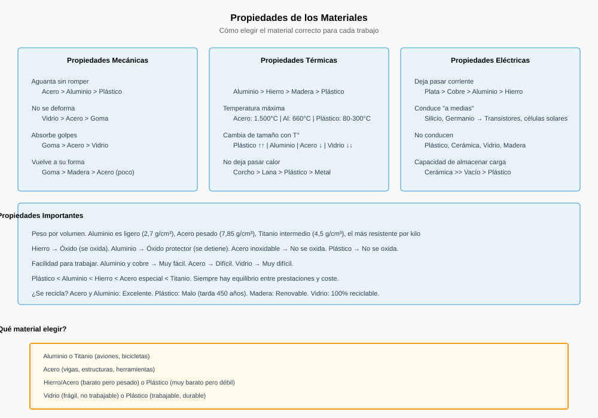
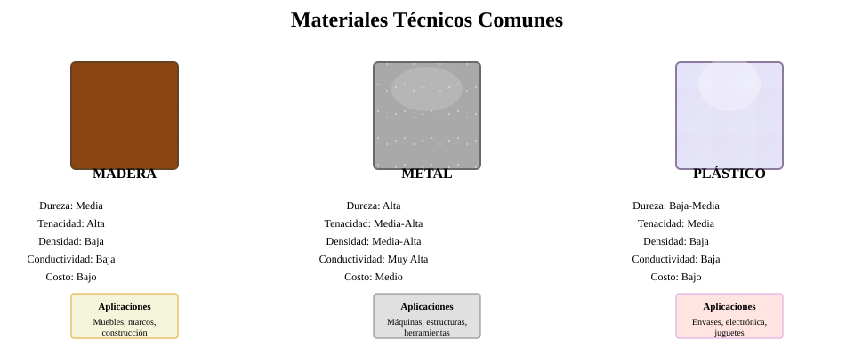
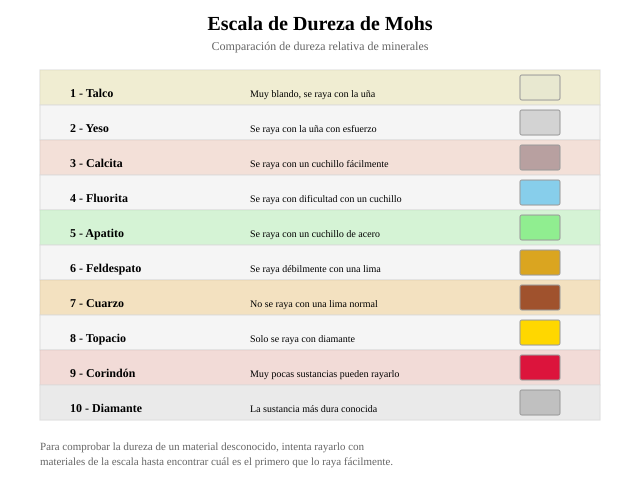
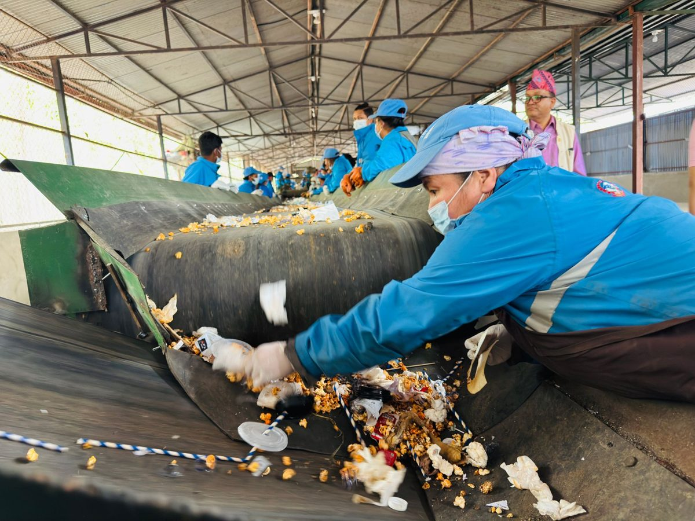

Por qué las cosas están hechas de lo que están hechas
Ningún material es el mejor. Elegir uno es comparar lo que sabe hacer con lo que tú necesitas.
Coge cualquier objeto que tengas encima de la mesa. El boli, la mochila, la botella, la silla.
Comparad las respuestas. Van a salir tres, y las tres son la misma: porque sí, porque es barato o porque siempre se ha hecho así.
Ninguna explica nada. Y sin embargo alguien tomó esa decisión, y la tomó por razones muy concretas que se pueden medir.
El mismo objeto, tres materiales
Para ver que la elección no es arbitraria hace falta un objeto que se fabrique igual en materiales distintos. La bicicleta sirve perfectamente: el mismo cuadro, la misma forma, y tres materiales que se usan de verdad.
Fíjate en que ninguno gana en todo. El carbono es el más ligero y el peor de reparar. El acero es el más pesado y el que más dura. No hay un material mejor: hay un material adecuado para lo que quieres hacer.
Definiciones
Material técnico: materia prima transformada para poder fabricar objetos con ella.
Propiedad: característica de un material que se puede medir y que determina si sirve o no para un uso concreto.
Elegir un material es comparar propiedades frente a lo que necesitas, no buscar el mejor: el mejor no existe.
Qué se mide de un material
Propiedades que hay que conocer
- Dureza: resistencia a ser rayado.
- Tenacidad: aguanta golpes sin romperse. Lo contrario es fragilidad.
- Elasticidad: se deforma y recupera su forma.
- Plasticidad: se deforma y no la recupera. Si es en hilos, ductilidad; si es en láminas, maleabilidad.
- Densidad: cuánto pesa un volumen dado. De ahí sale que algo sea «ligero».
- Conductividad: deja pasar el calor o la electricidad. Lo contrario es aislante.


Durante casi toda la historia esto no se eligió: se usaba lo que había cerca. Las casas del norte se hicieron de madera y las del sur de piedra y barro porque eso era lo que tenían a mano, no porque nadie comparara propiedades.
La idea de elegir el material es moderna y depende de dos cosas que antes no existían: poder medir las propiedades —los primeros ensayos sistemáticos de resistencia son del siglo XVIII— y poder transportar materiales lejos de donde se extraen. Sin ferrocarril no hay elección de material: hay lo que hay.
Qué hay que hacer
Elegid un objeto del aula que tenga al menos tres piezas de materiales distintos. Una silla, una mochila, unas tijeras, un boli.
- Dibujadlo y señalad tres piezas de materiales diferentes.
- Para cada pieza: qué material creéis que es y qué dos propiedades lo hacían adecuado ahí.
- Para cada pieza: proponed otro material que también valdría y decid qué se ganaría y qué se perdería.
- Elegid la pieza que os parezca peor resuelta y justificad por qué.
Cómo se evalúa
- Las tres piezas son de materiales realmente distintos (2 puntos).
- Las propiedades citadas son propiedades, no opiniones (3 puntos).
- La alternativa es razonable y se dice qué se pierde (3 puntos).
- La crítica final está argumentada (2 puntos).
Vuelve a la frase que escribiste al empezar la clase. Probablemente ponía «porque es barato».
Ahora podrías escribir: es de polipropileno porque es ligero, aislante, no se oxida y se puede moldear en caliente en una sola pieza. Eso sí explica algo, y además permite discutirlo.
- ¿Cuál es el mejor material para un cuadro de bicicleta?
Ver respuesta
Pregunta trampa: ninguno. Depende de qué te importe. Si es el peso, el carbono; si es que dure y se pueda arreglar, el acero; si quieres un equilibrio, el aluminio.
- Diferencia entre elasticidad y plasticidad.
Ver respuesta
En la elasticidad el material recupera su forma al dejar de apretar. En la plasticidad se queda deformado. Una goma es elástica; la plastilina, plástica.
- ¿Por qué el precio no es una propiedad del material?
Ver respuesta
Porque no es una característica del material en sí: es una consecuencia de lo abundante que sea, de lo que cueste extraerlo y de cómo se fabrique. El mismo material cambia de precio sin cambiar sus propiedades.
Todo sale de algo que hubo que sacar de algún sitio
Detrás de cada objeto hay una materia prima, y casi siempre un camino largo desde ella.
Coge lo que lleves puesto y vacía el estuche encima de la mesa. Ahí hay, como poco, algodón, plástico, aluminio, madera y goma.
El reto: de cada una de esas cinco cosas, ¿de dónde salió? No vale «de una fábrica»: hay que llegar hasta la planta, el animal o la mina.
Los objetos se fabrican con materiales, y los materiales se sacan de materias primas. Las materias primas se clasifican por su origen:
| Origen | Ejemplos de materia prima | En qué acaba |
|---|---|---|
| Vegetal | Árboles, algodón, lino, corcho, caucho | Madera y papel, tejidos, tapones, neumáticos |
| Animal | Lana, seda, cuero, hueso | Ropa de abrigo, calzado, cuerdas |
| Mineral | Minerales metálicos, arcilla, arena, petróleo | Metales, cerámica, vidrio, plásticos |
El plástico es de origen mineral: sale del petróleo. Suena raro porque no se parece en nada, y justamente por eso es un buen ejemplo de lo que viene ahora.
Naturales y artificiales
Un material es natural cuando se usa tal como se encuentra, o casi: la madera de un listón, la piedra de un muro, la lana de un jersey. Es artificial cuando el ser humano transforma la materia prima con procesos físicos o reacciones químicas.
Y la distancia entre uno y otro puede ser enorme. Un tablero es madera con una transformación física pequeña. El metacrilato, en cambio, sale así:
- Del petróleo se separan, entre otros productos, las naftas.
- De las naftas se extrae el metacrilato.
- El metacrilato entra en un reactor, con otras sustancias, a la presión y la temperatura adecuadas, y sale el polímero.
- El polímero se moldea y ya es una pieza transparente de las que parecen cristal.
Y los que aún se están inventando
La ciencia de los materiales estudia de qué están hechas las cosas por dentro para diseñar materiales a medida de un problema. Hoy se agrupan en tres familias:
- Nanomateriales: fabricados manipulando la materia a escala nanométrica (1 nm es la millonésima parte de un milímetro).
- Materiales inteligentes: responden de forma reversible a un estímulo —calor, luz, un campo eléctrico— y vuelven a su estado.
- Biomateriales: imitan procesos o materiales del cuerpo, para huesos, tejidos y músculos.
Qué hay que hacer
- Elegid cinco objetos de la mesa o de la mochila.
- De cada uno: material → materia prima → origen (vegetal, animal o mineral).
- Marcad cuáles son naturales y cuáles artificiales.
- Elegid el que tenga el camino más largo y dibujadlo como una cadena de pasos, igual que la del metacrilato.
Cómo se evalúa
- Los cinco orígenes, correctos (4 puntos).
- Natural o artificial, bien justificado (3 puntos).
- La cadena de pasos del más largo (3 puntos).
- ¿Cuál es el origen del plástico?
Ver respuesta
Mineral: sale del petróleo.
- Pon un material de origen animal y otro de origen vegetal.
Ver respuesta
Animal: lana, seda, cuero. Vegetal: madera, algodón, lino, corcho.
- ¿Qué diferencia hay entre un material natural y uno artificial?
Ver respuesta
El natural se usa tal como se encuentra; el artificial se obtiene transformando la materia prima con procesos físicos o reacciones químicas.
Medir, no opinar: los ensayos
Una propiedad solo sirve para elegir un material si se puede medir. Y medir significa que cualquiera repita la prueba y le salga lo mismo.
En la sesión anterior quedó claro que un material se elige comparando propiedades. Bien. Coge estas dos cosas de la mesa:
Aquí empiezan los problemas. Casi todos contestarán «la mesa, porque se nota». Pero notarlo no es saberlo. Si dos personas discrepan, ¿quién decide?
Mientras la respuesta sea «se nota», seguimos en las opiniones del tema anterior. Una propiedad solo sirve para elegir si se puede medir —y medir significa que cualquiera repita la prueba y le salga lo mismo.
Medir la dureza sin ningún aparato
La dureza fue de las primeras propiedades que se consiguieron medir, y se hizo de la forma más simple imaginable: ver quién raya a quién. Si A raya a B, A es más duro. Sin discusión posible.
Ensayo
Ensayo: prueba normalizada que se hace sobre un material para medir una de sus propiedades, de forma que el resultado sea el mismo lo haga quien lo haga.
Dureza: resistencia a ser rayado. Se mide con la escala de Mohs, del 1 (talco) al 10 (diamante). Cada material raya a los de número menor y es rayado por los de número mayor.
La escala la propuso el mineralogista Friedrich Mohs en 1812, y su genialidad no fue científica sino práctica: no necesita ningún instrumento. Un geólogo en mitad del campo podía identificar un mineral con la uña, una moneda de cobre y una navaja.
Es una escala ordinal: dice quién va delante de quién, no cuánto. El diamante es un 10 y el corindón un 9, pero el diamante no es «uno más duro»: es unas cuatro veces más duro. Por eso en la industria se usan hoy otras escalas —Brinell, Rockwell, Vickers— que sí dan números proporcionales. La de Mohs sobrevive porque sigue siendo la única que funciona sin enchufe.

Los otros ensayos
Ensayos mecánicos que hay que conocer
- Tracción: se estira la probeta hasta romperla. Mide la resistencia y si el material avisa antes de romper.
- Compresión: se aplasta. Importa en pilares y estructuras.
- Flexión: se apoya por los extremos y se carga en el centro.
- Resiliencia: se golpea de un martillazo. Distingue lo tenaz de lo frágil.
- Fatiga: se carga y descarga miles de veces. Un material puede aguantar un golpe fuerte y romperse por muchos golpes flojos.
Qué hay que hacer
Vais a construir vuestra propia escala de Mohs con lo que hay en el aula. Nada de aparatos: solo rayar.
- Reunid seis objetos de materiales distintos: uña, goma, moneda, lápiz, llave, tijeras, un trozo de baldosa, lo que tenéis.
- Rayad cada uno con cada uno. Son quince parejas. Anotad en una tabla quién raya a quién.
- Ordenadlos de menos a más duro a partir de esos resultados.
- Comprobad que el orden es coherente: si A raya a B y B raya a C, A tiene que rayar a C. Si no se cumple, algo habéis medido mal. Repetid esa pareja.
- Intercambiad la tabla con otro grupo. ¿Os sale el mismo orden?
Cómo se evalúa
- La tabla de quince parejas está completa (3 puntos).
- El orden final se deduce de la tabla, no de lo que os parecía (3 puntos).
- Habéis comprobado la coherencia y repetido lo que fallaba (2 puntos).
- Está anotada la comparación con el otro grupo (2 puntos).
Volved a la pregunta del principio: ¿qué es más duro, el boli o la mesa?
Ya no hace falta contestar «se nota». Ahora se contesta rayando, y si alguien discrepa, se repite la prueba delante de él.
- ¿Qué es un ensayo y en qué se diferencia de una impresión?
Ver respuesta
Es una prueba normalizada: hecha siempre igual, de modo que el resultado no dependa de quién la haga. Una impresión sí depende de quién la tenga.
- Un material aguanta un martillazo pero se rompe tras meses de vibración. ¿Qué ensayo lo detecta?
Ver respuesta
El de fatiga, que carga y descarga miles de veces. El de resiliencia solo mide el golpe único, y ese lo aguantaba.
- ¿Por qué se dice que la escala de Mohs es ordinal?
Ver respuesta
Porque dice quién va delante de quién, pero no cuánto. Del 9 al 10 hay mucha más diferencia que del 1 al 2, aunque el salto de número sea el mismo.
Los plásticos: hubo que inventarlos
No estaban en ninguna parte esperando a que alguien los encontrara. Y se inventaron, irónicamente, para dejar de matar elefantes.
La madera creció. El metal estaba dentro de una piedra. Con los plásticos pasa algo distinto:
¿Y por qué se inventaron? Aquí viene lo bueno, y no es lo que esperas.
En 1863, una empresa de billares de Nueva York ofreció 10.000 dólares —una fortuna entonces— a quien encontrara un sustituto del marfil para las bolas. Se estaban quedando sin elefantes, y con ellos sin negocio.
John Wesley Hyatt ganó el premio en 1869 con el celuloide. Funcionaba, aunque con un inconveniente memorable: era tan inflamable que, según contaban los duenos de los salones, a veces el choque de dos bolas provocaba un pequeño estallido y los vaqueros sacaban la pistola.
El primer plástico totalmente sintético llegó en 1907: la baquelita, de Leo Baekeland. Y merece la pena quedarse con la ironía: los plásticos se inventaron para dejar de matar elefantes y tortugas. Hoy son el símbolo del problema ambiental. Ninguna tecnología nace buena ni mala: nace resolviendo algo, y crea lo siguiente.
Qué es un plástico por dentro
Un plástico es un polímero: moléculas larguísimas formadas repitiendo una pequeña unidad miles de veces, como un collar de cuentas iguales. Y casi todo su comportamiento depende de cómo estén esas cadenas entre sí.
Los plásticos
Polímero: molécula muy larga formada por la repetición de una unidad pequeña, el monómero.
Termoplásticos: cadenas sueltas. Con calor se ablandan y se pueden remoldear muchas veces. Se reciclan. PET, PE, PP, PVC, PS.
Termoestables: cadenas unidas entre sí por enlaces. Con calor se queman sin ablandarse. No se reciclan fundiéndolos. Baquelita, resinas epóxi, poliuretano.
Elastómeros: cadenas poco unidas y muy enrolladas. Se estiran mucho y recuperan la forma. Caucho, goma, silicona.
El triángulo de la base
Casi todo envase lleva un triángulo con un número del 1 al 7. No es decoración: dice de qué plástico está hecho, y por tanto si se puede reciclar y con qué.
Códigos que conviene reconocer
- 1 · PET — botellas de agua y refresco. Se recicla muy bien.
- 2 · HDPE — garrafas, botes de detergente. Se recicla bien.
- 3 · PVC — tuberías, marcos. Difícil y problemático.
- 4 · LDPE — bolsas y film. Se recicla mal por lo fino.
- 5 · PP — tápers, tapones. Aguanta el microondas.
- 6 · PS — porex, bandejas. Voluminoso y poco rentable.
- 7 · Otros — cajón de sastre. Casi nunca se recicla.
Qué hay que hacer
- Reunid seis envases o piezas de plástico y buscad el triángulo con su número. Suele estar en la base, muy pequeño.
- Anotad el número, el nombre del plástico y para qué sirve ese objeto.
- Decid si cada uno es termoplástico o termoestable, y en qué os basáis.
- Para cada uno: ¿por qué ese plástico y no otro? Pensad en si va al microondas, si aguanta golpes, si tiene que ser transparente.
- Buscad uno que, en vuestra opinión, no debería ser de plástico. Argumentadlo.
Cómo se evalúa
- Los seis triángulos están localizados y anotados (3 puntos).
- La clasificación termoplástico/termoestable es correcta (2 puntos).
- Las razones de uso son técnicas (3 puntos).
- La crítica final está argumentada (2 puntos).
Los plásticos se inventaron para no tener que matar elefantes. Hoy son el símbolo del problema ambiental. Las dos cosas son verdad a la vez.
Esa es probablemente la lección más importante del tema: ninguna tecnología nace buena ni mala. Nace resolviendo un problema, y al resolverlo crea el siguiente.
- ¿Qué diferencia hay entre un termoplástico y un termoestable?
Ver respuesta
Las cadenas. En el termoplástico están sueltas y con calor deslizan: se remoldea y se recicla. En el termoestable están unidas por enlaces que el calor no deshace: se quema antes de ablandarse.
- ¿Qué significa exactamente el triángulo con un número?
Ver respuesta
Dice de qué plástico está hecho, nada más. No garantiza que se recicle: un 6 o un 7 lo llevan y casi siempre acaban incinerados.
- Los plásticos se inventaron para sustituir al marfil. ¿Qué enseña eso?
Ver respuesta
Que una tecnología puede resolver un problema grave —la caza de elefantes— y crear otro distinto décadas después. Hay que juzgarlas por sus consecuencias completas, no por su intención.
Qué pasa cuando lo tiras
Elegir un material no termina en sus propiedades. La otra mitad de la decisión es qué ocurre con él después.

Foto de CP Khanal en Pexels. Es de su autor y no forma parte del material publicado bajo la licencia de esta página.
Una pregunta que parece de otra asignatura y no lo es:
Existe. No ha desaparecido. Está en algún sitio concreto, ahora mismo, y lo más probable es que siga existiendo cuando tú tengas cincuenta años.
Durante todo este tema hemos elegido materiales mirando lo que saben hacer. Falta la otra mitad de la decisión: qué pasa con ellos después.
El objeto no termina cuando lo tiras
Ciclo de vida
Ciclo de vida: todas las etapas por las que pasa un producto, desde que se extrae la materia prima hasta que se convierte en residuo o vuelve a ser materia prima.
Modelo lineal: extraer, fabricar, usar, tirar. Modelo circular: lo que se tira vuelve a entrar como materia prima.
Huella de carbono: los gases de efecto invernadero que se sueltan a lo largo de todo ese ciclo. No solo CO₂: también metano y otros, que calientan más por kilo, así que se convierten a la cantidad de CO₂ que haría el mismo daño. Por eso verás escrito CO₂eq, de «equivalente».
Las tres erres, en el orden correcto
Reducir, reutilizar, reciclar
- Reducir: no usarlo. Es la única que ahorra el 100 por cien.
- Reutilizar: usarlo otra vez tal cual, sin transformarlo.
- Reciclar: destruirlo para recuperar el material.
El orden importa, y casi siempre se cuenta al revés. Reciclar es la última, no la primera: sigue gastando energía y transporte.
Hay un término que conviene conocer: obsolescencia programada, diseñar algo para que dure poco. El caso documentado más claro es el cártel Phoebus: en 1924 los grandes fabricantes de bombillas acordaron por escrito limitar su duración a 1.000 horas, cuando ya fabricaban algunas de 2.500. Multaban al que se pasara.
Existe una bombilla encendida desde 1901 en un parque de bomberos de California. La han visto millones de personas por internet. No es un milagro: es que se fabricó antes del acuerdo.
Qué hay que hacer
Elegid un objeto cotidiano: una botella de agua, un boli, unos auriculares, un móvil.
- Reconstruid su ciclo de vida completo, las cinco fases, con todo el detalle que podáis.
- Señalad en qué fase se gasta más energía y en cuál se genera más residuo.
- Proponed una mejora por cada erre: una para reducir, una para reutilizar y una para reciclar.
- Decid cuál de las tres tendría más efecto y por qué.
Cómo se evalúa
- El ciclo de vida está completo y es realista (3 puntos).
- La fase crítica está bien identificada (2 puntos).
- Hay una mejora por cada erre y son aplicables (3 puntos).
- La conclusión razona cuál tiene más efecto (2 puntos).
Diez preguntas de todo el tema. Contesta primero en el cuaderno y luego despliega cada una.
- ¿Cuál es el mejor material?
Ver respuesta
Ninguno. No existe. Existe el adecuado para lo que quieres hacer, y se encuentra comparando propiedades con lo que necesitas.
- ¿Por qué el precio no es una propiedad?
Ver respuesta
Porque no es una característica del material: es consecuencia de su abundancia, de lo que cueste extraerlo y de cómo se fabrique.
- ¿Qué es un ensayo?
Ver respuesta
Una prueba normalizada para medir una propiedad, hecha siempre igual para que el resultado no dependa de quién la haga.
- ¿Qué significa que la madera sea anisótropa?
Ver respuesta
Que sus propiedades cambian según la dirección: mucho a lo largo de la veta, poco a lo ancho.
- ¿Qué problema resuelve el contrachapado?
Ver respuesta
La anisotropía. Cruzando la veta de cada capa 90 grados, ninguna dirección queda débil.
- ¿Cómo distingues un metal férrico de uno que no lo es?
Ver respuesta
Con un imán. Si se pega, lleva hierro. Con la excepción del acero inoxidable, que lo lleva y no se pega.
- ¿Por qué reciclar aluminio ahorra tantísima energía?
Ver respuesta
Porque lo caro es separarlo del mineral por electrolisis, y eso ya se hizo. Reciclar solo exige fundirlo.
- Termoplástico y termoestable: la diferencia, y su consecuencia.
Ver respuesta
El primero tiene las cadenas sueltas y con calor se remoldea, así que se recicla. El segundo las tiene unidas por enlaces y se quema antes de ablandarse: no se recicla fundiéndolo.
- Ordena las tres erres de más a menos eficaz y explica el orden.
Ver respuesta
Reducir, reutilizar, reciclar. Reducir es la única que ahorra todo; reutilizar no transforma nada; reciclar todavía gasta energía y transporte.
- ¿Es la tecnología buena o mala para el medio ambiente? Razona.
Ver respuesta
Ni una cosa ni otra. El plástico se inventó para dejar de matar elefantes y hoy es un problema ambiental. Una tecnología resuelve un problema y al hacerlo crea el siguiente: hay que juzgarla por sus consecuencias completas.
Y ahora el mismo tema, pero corrigiéndose solo. Diez preguntas, una respuesta buena en cada una, y todas explican por qué —también las que aciertes—. No cuenta para nota: es para saber por dónde andas antes del examen.
Lo que tiene que haber quedado del tema
1. Elegir un material es…
2. La madera de balsa se corta con la uña. En la clasificación de maderas es…
3. La leña se raja siempre a lo largo porque…
4. El contrachapado se inventó para…
5. En la escala de Mohs el diamante es un 10 y el corindón un 9. Eso significa que el diamante…
6. ¿Qué convierte una prueba en un ensayo?
7. Producir un kilo de aluminio cuesta unos 45 kWh y reciclarlo, unos 2. La consecuencia más importante es que…
8. Un plástico que se ablanda al calentarlo y se puede volver a moldear…
9. Las tres erres, en el orden que importa:
10. En 1924, los grandes fabricantes de bombillas acordaron por escrito limitar su duración a 1.000 horas cuando ya sabían hacerlas de 2.500. Eso tiene nombre:
Se corrige en tu propio navegador: no se envía ni se guarda nada.
El árbol de dos piezas
No es una actividad de sesión y no gasta minutos de ninguna: es un proyecto corto —una hora larga— para la última clase antes de las vacaciones. Sale un adorno, pero lo que se hace de verdad es un ensayo comparativo: el mismo objeto, cortado en tres materiales distintos, y una tabla de números para decidir cuál habría que usar. Que es el problema del tema entero.
Un árbol que se sostiene de pie sin pegamento: dos siluetas iguales que se encajan cruzadas, una por una ranura de abajo y la otra por una de arriba. La misma unión del soporte de móvil del tema 1.
El dibujo, una sola vez
- Dibujad una silueta de árbol: 120 mm de alto, 90 mm de ancho en la base y la copa cortada plana, de 14 mm.
- Por el eje, una ranura de 60 mm: en una pieza desde el pie hacia arriba, y en la otra desde la copa hacia abajo. 60 mm por 2 son 120 mm, que es justo el alto, así que al encajarlas los dos pies llegan a la mesa a la vez.
- El ancho de la ranura no se puede dibujar todavía. Lee el recuadro de abajo.
Cortar: dos piezas de cada material, seis en total
Cronometrad lo que tarda una pieza en cada material y anotadlo. Ojo a la copa: de los 14 mm, la ranura se lleva el grueso, y con cartón pluma quedan (14 − 5) / 2 = 4,5 mm a cada lado. Es la parte más frágil del árbol, y es donde se va a ver la diferencia entre los tres materiales.
La tabla, que es el trabajo de verdad
| Qué se mide | Cartón ondulado | Cartón pluma | Chapa fina |
|---|---|---|---|
| Grueso medido, en mm | |||
| Tiempo de corte de una pieza | |||
| ¿Se desgarró la copa? ¿Dónde? | |||
| Peso del árbol montado, en gramos | |||
| ¿Se queda de pie solo? | |||
| Qué se ve en el canto |
Cómo se evalúa
- El dibujo está acotado y la ranura lleva escrito de qué grueso es (2 puntos).
- Los tres árboles se montan y se sostienen de pie solos (2 puntos).
- La tabla está completa, con los tiempos cronometrados y los pesos en gramos (3 puntos).
- La decisión de los treinta está razonada con dos números de la tabla (2 puntos).
- El canto de cada material está descrito y dibujado (1 punto).
Esto que acabáis de hacer tiene nombre en la industria: matriz de selección de materiales. Se ponen los candidatos en columnas, las propiedades que importan en filas, y se decide con la tabla y no con la intuición. Cambian los materiales y cambian las filas —en un coche estaría el peso, en un envase el precio—, pero el método es exactamente este.
Lectura de aula
Treinta párrafos numerados y diez preguntas. Ocupa una sesión entera: se lee en voz alta por turnos, un párrafo cada uno, y luego se contesta por escrito. Trae su cabecera para el nombre, el grupo y la fecha.
Descargar el PDFLicencia y uso
Tema 3 · Materiales · © 2026 Roberto P. García Llorente, Profesor de Tecnología en Educación Secundaria.
Publicado bajo Creative Commons Reconocimiento-CompartirIgual 4.0 Internacional. Puedes copiarlo, adaptarlo y redistribuirlo, incluso con fines comerciales, siempre que cites la autoría, indiques si lo has modificado y publiques tus versiones derivadas con esta misma licencia.
Cómo citar
Roberto P. García Llorente (2026). Tema 3 · Materiales. https://rgllorente82-png.github.io/robertotecnologia/2eso/TyD/tema3/. Bajo licencia CC BY-SA 4.0.
Qué cubre
Los textos, los dibujos y el código de esta página, que son obra propia.
No cubre las fotografías, que proceden de Wikimedia Commons y conservan su propia licencia, indicada bajo cada una. Algunas son de dominio público; las demás están bajo licencias Creative Commons compatibles con esta, y se reproducen citando autoría y licencia como exigen. Tampoco cubre las tipografías, de Google Fonts con su propia licencia.
Otros usos
Para usos que excedan la licencia, abre una incidencia en el repositorio del proyecto.